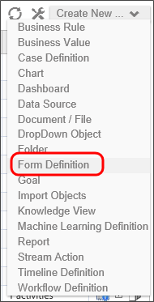
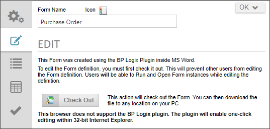
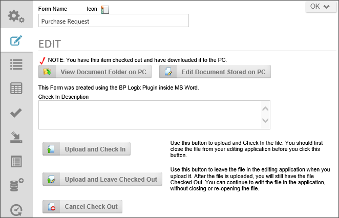
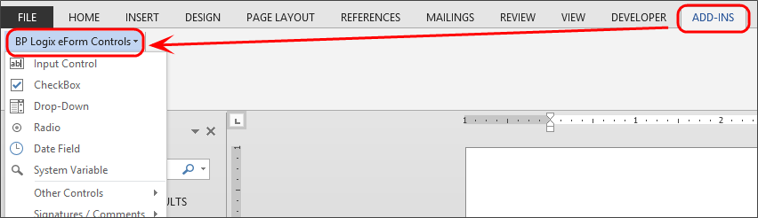
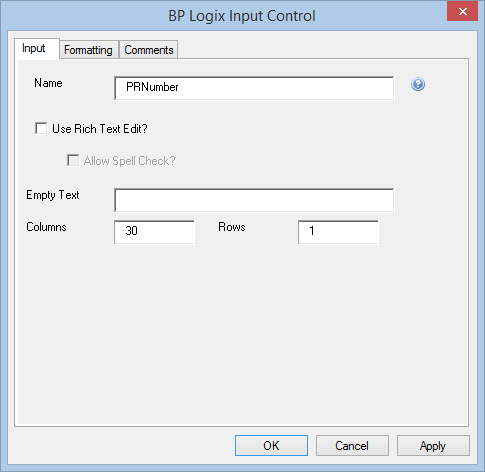

The Word Form Builder was largely deprecated by the introduction of the Online Form Designer (OFD). The Word Form Builder remains supported largely for legacy and backwards compatibility reasons. We recommend that all new forms be created with the Online Form Designer, and that customers migrate existing forms to the OFD format using the conversion tool provided on the Edit tab of the form definition.
Form definitions are stored in the Process Director database. These Form definitions can be created using the BP Logix Form Builder for Microsoft Word, the online Form Designer built into Process Director, or with your existing HTML authoring tool. The BP Logix Form Builder runs as a plug-in to Microsoft Word. Regardless of the method used to create the Form, end-users are presented with an HTML rendition of the electronic form. This allows your users to fill out and submit forms from within their browser.
The Word Form Builder is used to control what the form looks like. The properties of the Form definition on the server control the default values, validation and pre-population of fields on the form.
To use the Word Form Builder, the BP Logix plug-in must be installed. The Form Builder runs as an add-in to Microsoft Word.
The BP Logix plug-in uses Microsoft ActiveX technology, which Microsoft has not upgraded to 64-bit. You must, therefore, use a 32-bit version of Microsoft Office to use the Plug-in. Outside of some specific requirements, Microsoft recommends that most users do not use the 64-bit version of Office, due to other limitations of the 64-bit version.
To edit a Form, open a Form definition in Process Director. If a Form definition does not exist, create a new MS Word document and save it. Use the Create New dropdown Menu in the Content List and choose the Form Definition menu item.

Edit a Form Definition
By clicking on the Edit tab that appears in the Form Definition, you will have the option to “Check Out” the Form and make changes.
In the edit section, click the Check Out and Edit button. The Form template will be checked out to you, so that only you can edit it, and will open automatically in Microsoft Word.
The Check Out and Edit button and the automated interaction with Microsoft Word will only be available from Internet Explorer. If you use a different browser, only a Check Out button will appear, and you will need to manually open the Form template in Word. Note that a warning message will appear at the bottom of the screen, informing you that your browser is incompatible with the BP Logix Plugin.

Once you have made your changes and saved the template, you will have to upload the edited Form to the server. This is also located under the Edit tab. Click the Upload and Check In button to upload your edited template and check it back in.

You may find that you you need to upload your document to test a change you have made, while keeping the template checked out for further editing. Click the Upload and Keep Checked Out button to return the template in its current state to the server, while keeping the check out active. Alternatively, you may wish to discard any changes made, and undo the checkout completely, which is accomplished by clicking the Cancel Check Out button.
After the plug-in is installed, the Word Form Builder will display a new Ribbon tab button in Microsoft Word called Add-Ins. The Add-Ins tab will contain a menu dropdown named BP Logix Form Controls, that contains all of the Process Director Form controls you need to design your Form template. The standard Word formatting options are used to format the layout and control the appearance of the Form.

Additionally, because the Form template will be converted from Word format into an ASP.NET document, you may also use any ASP.NET controls you desire by simply typing in the control syntax text into your word document. The BP Logix controls can also use a similar tag syntax to ASP.NET control, so you can, if you desire, manually type in the control tags into your template, instead of using the visual controls from the BP Logix Form Controls menu. For more information on the tag syntax, see the Form Control Tags section of the documentation.
Using the Microsoft Word Form Fields
Each control in the BP Logix Form Controls menu has a number of properties that can be applied to the control. Double-clicking on a control will open a Properties dialog box for the control.

When a form field is added, it must contain a value in the Name field. Default names are used when fields are added (e.g. Text1, Text2); however it is recommended these be changed to a field name that is meaningful in the context of the form. If a Name is empty, the field will not appear on the Form.
The Name property's value must meet the following conditions:
The value must be unique, that is to say, used only once on the Form. If two fields use the same Name value, only one of the fields will be added to the Form definition, and an error will be displayed when the Form is opened.
The value must be less than 64 characters in length.
The value cannot contain any spaces or special characters. Only letters and numbers are allowable.
See the Form Controls topic for specific information on the different Form Controls, and how to add them to the Word Template.
Video Sample
Stylizing Forms using MS Word and CSS
You can apply a CSS style to Form elements using Microsoft Word. Create a customized style in Microsoft Word. Click here to find out how. Apply that customized style to the text, table rows, or other elements you want stylized.
In a custom CSS file, create a class with the same name as the style, and set the style’s properties there. In all Forms on Process Director, all elements with that style name will be stylized the same way.
To add a custom CSS file to Process Director, see the Developer’s Guide.
Using Word Templates for Forms
Process Director allows the use of Microsoft Word templates. This enables control of formatting changes to multiple Forms. By Checking Out and Editing a form you can have the form changed based on the template that is attached to the form. This template can be stored on a network drive.
To Create new Form template using the Form Builder in Microsoft Word
Create a Microsoft Word template Form.
Create Microsoft Word Styles for all areas that need formatting.
Create default text and data for Form.
Upload this Form to Process Director as a Form document template (To be used as for new Forms).
Save this doc as a Word Template (.dot or .dotx) in a shared network folder.
Ensure Word doc is "linked" to Word Template and "auto-apply" in Microsoft Word's Templates and Add-ins options.
To create a new Form (using a template)
Copy Form document template in Process Director.
Ensure the Word Template "link" correct in Microsoft Word's Templates and Add-ins options.
Edit new Form
To change styles of the template
Edit the Word Template (.dot or .dotx).
Check out and Edit any Form that uses this.
Ensure new template styles are applied.
Upload and Check in.
Converting a Word Form to an Online Form Designer Form
For users of Process Director v5.12 and higher, legacy forms built with the Word Form Builder can be converted to the Online Form Designer format.
On the Edit tab for Word-based form definitions, the Convert to an HTML Form button, when clicked, will convert the Word form template to the Online Form Designer format. When the conversion is complete, you'll be transferred to the Online Form Designer edit screen and see your converted form.
Some editing may be required after the conversion. Most of the common controls will show with the proper visual placeholders you're used to, but the lesser-used controls will appear using the "{FORM_TAG}" syntax as form tags. As time goes by, or as customers request, BP Logix will eventually convert those controls to the appropriate visual placeholders as well.
For the most part, the form layout will be preserved, and the editing shouldn't be too onerous.
Also, when you make the conversion, the old Word version of the form will be preserved as a formal version in the Versions tab of the Form Definition, so you can, if necessary, roll back to the Word version.
 The Word Form Builder was largely deprecated by the introduction of the Online Form Designer (OFD). The Word Form Builder remains supported largely for legacy and backwards compatibility reasons. We recommend that all new forms be created with the Online Form Designer, and that customers migrate existing forms to the OFD format using the conversion tool provided on the Edit tab of the form definition.
The Word Form Builder was largely deprecated by the introduction of the Online Form Designer (OFD). The Word Form Builder remains supported largely for legacy and backwards compatibility reasons. We recommend that all new forms be created with the Online Form Designer, and that customers migrate existing forms to the OFD format using the conversion tool provided on the Edit tab of the form definition.